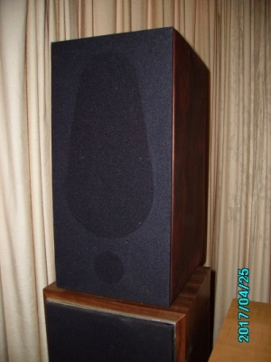
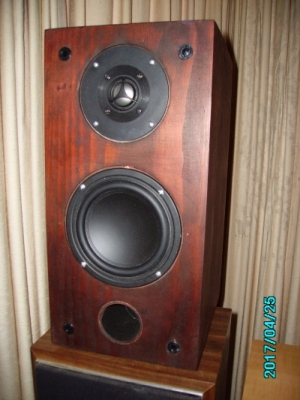
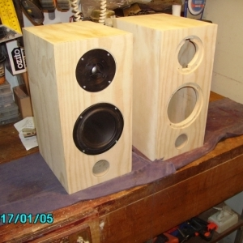
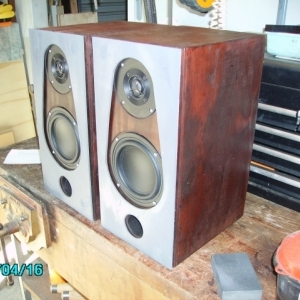
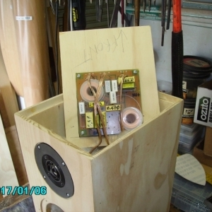
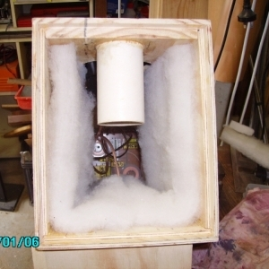
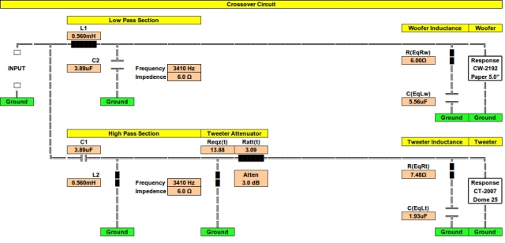

|
NAVIGATION
TOP of Page
MAIN Page
HOME Page
JAYCAR STANDMNT
About the Speaker
Speaker Design
Listening Tests
Specifications
Crossover Network
|
About the Loudspeaker
|

Finished speaker in lounge room
|

Speaker front without grille
|
The Jaycar is a compact two way bass reflex loudspeaker with superior acoustic qualities,
capable of exceeding the performance of well known commercial speakers. It has been designed
to use only Jaycar components as being a suitable design for publication.
TOP
MAIN
HOME
Designing and Building the Loudspeaker
This project began as a demonstration of the use of current Jaycar drivers to produce a high fidelity loudspeaker
system suitable for publication and use as a Jaycar kit. The performance is the equal of the High Performance
Stand Mounted speaker published on this website. The enclosures are simply made using rebate joints throughout
with the main timber being Five Ply available from Bunnings. It gives a better appearance when sanded down and
stained.
The cabinet has the same dimensions as a Jamo Studio 120 speaker. The baffle is a piece of 18mm pine measuring
400mm high by 200mm wide, with the mounting holes cut using a circle cutter jig on a plunge router. Both drivers
were flush mounted, requiring two applications of the router at differing diameters. The drivers were hidden
behind the grille by deep colour staining of the baffle. The bass driver is sealed with speaker sealant
(Jaycar CF-2762) to prevent leakage. Note the rectangular cutout for the tweeter terminals.
The drivers are from Jaycar - The woofer is a Response 5" Shielded paper cone bass/midrange (Jaycar CW-2192) and
the tweeter is a Response 25mm using a Titanium Dome and Ferrofluid magnetic damping (Jaycar CT-2007). The bass
driver was chosen due to suitability for this volume of enclosure and the tweeter due to the low resonance frequency.
The port is a 50mm diam, 111mm long cardboard tube and the crossover network is a 12dB/octave Linkwitz-Riley at 3410Hz,
designed from an Excel spreadsheet I wrote.
All components are within 1% of the values from the calculations - note the measured values written on the capacitors.
The tweeter section has a 3dB attenuator for level and impedence matching. Voice Coil inductance equalisation is applied
to both drivers. The circuit board is a Jaycar CX-2605 and the Jaycar PT-3006 speaker terminals screw down tightly and
will take either cables or plugs, in preference to spring loaded terminals.
The crossover network is placed in the ceiling of the enclose to avoid space conflicts with the port. I have mounted it
on two wooden rails, which spaces the underneath soldered joints away from the internal wall and adds rigidity to the
enclosure. The side walls are also strengthened by cross braces at the height of the centre of the woofer. Acoustic
Wadding (Jaycar AX3694) is cut and applied to the back and sides of the speaker as per the image. Also note the solidity
of the cabling to the drivers.
The speaker was finished with the application of a grille and grille cloth. The grille is a 1/4" fibre
board sheet, cut out with circular holes for each driver and close mounted to the baffle on four speaker
grille clips (Jaycar CF-2761). The grille cloth (Jaycar CF-2752) is acoustically transparent and glued
to the rear of the grille using a Selleys spray glue and temporary staples to allow the glue to set.
|

Drivers on the Front Baffle
|

Grilles on the Front Baffle
|
TOP
MAIN
HOME
Listening to the Loudspeaker
The speaker underwent testing in the lounge room, stacked above my set of Fllor Standers.
They have a clear midrange and treble, plus effective if not deep bass. A-B Testing against the Bowers &
Wilkins DM-303 bookshelf model reveals much better definition and sound staging, plus the transient
response and minimal overhang to reproduce cymbals effectively. Both human voice and piano are portrayed
with exceptional clarity.
|

Crossover Network in top panel
|

Wadding in Speaker interior
|
TOP
MAIN
HOME
Loudspeaker Specifications
|
Specifications :
|
Two Way Bass Reflex Stand Mount
|
|
Dimensions :
|
400mm(h), 200mm(h), 250mm(d)
|
|
Bass Enclosure :
|
13L Braced and Lined
|
|
Freq. Response :
|
50-20,000Hz @ -3dB
|
|
Resonance :
|
55Hz
|
|
Efficiency :
|
88dB SPL @ 1W @ 1m
|
|
Impedence :
|
6.0 ohms typical
|
|
Power Handling :
|
50W rms
|
|
Crossover :
|
3,410hz 2nd Order Linkwitz Network
|
|
Imp. Correction :
|
Woofer and Tweeter
|
|
Bass Driver :
|
Response 125mm Bass/Mid Poly Cone (Jaycar CW-2192)
|
|
Tweeter Driver :
|
Response 25mm Titanium Dome (Jaycar CT-2007)
|
TOP
MAIN
HOME
Crossover Network
 Circuit for the Crossover Network
TOP
MAIN
HOME
|